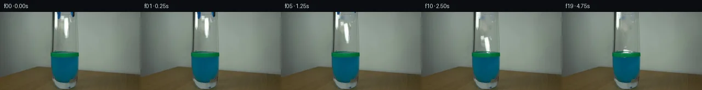

![首帧]()

Round 00
2026-11-05T05:27:38.385295+00:00像素候选变化代码 +191/−0inspection 更新
pixels 66a76b7b980367f7 · code 07e4cece15d9d9fe
查看本轮 generate.py 真实 diff
--- previous/generate.py
+++ current/generate.py
@@ -0,0 +1,191 @@
+#!/usr/bin/env python3
+"""Generate the 20-frame locked-camera paper-drop sequence.
+
+All pixels originate from first_frame.png or deterministic local raster operations.
+No external assets or models are used.
+"""
+
+from pathlib import Path
+
+import cv2
+import numpy as np
+from PIL import Image, ImageDraw
+
+from artifact_io import save
+
+
+ROOT = Path(__file__).resolve().parent
+H, W = 144, 256
+
+
+def polygon_mask(points, blur=0.0):
+ mask = np.zeros((H, W), np.uint8)
+ cv2.fillPoly(mask, [np.asarray(points, np.int32)], 255)
+ if blur:
+ mask = cv2.GaussianBlur(mask, (0, 0), blur)
+ return mask
+
+
+def affine_layer(rgb, alpha, source_center, target_center, angle, sx=1.0, sy=1.0):
+ """Move/rotate/scale a full-frame RGBA layer with antialiased sampling."""
+ theta = np.deg2rad(angle)
+ c, s = np.cos(theta), np.sin(theta)
+ # screen-coordinate clockwise-positive rotation
+ matrix2 = np.array([[c * sx, s * sy], [-s * sx, c * sy]], np.float32)
+ src = np.asarray(source_center, np.float32)
+ dst = np.asarray(target_center, np.float32)
+ trans = dst - matrix2 @ src
+ matrix = np.column_stack([matrix2, trans])
+ wrgb = cv2.warpAffine(
+ rgb.astype(np.float32), matrix, (W, H), flags=cv2.INTER_CUBIC,
+ borderMode=cv2.BORDER_CONSTANT, borderValue=0,
+ )
+ wa = cv2.warpAffine(
+ alpha.astype(np.float32), matrix, (W, H), flags=cv2.INTER_CUBIC,
+ borderMode=cv2.BORDER_CONSTANT, borderValue=0,
+ )
+ return np.clip(wrgb, 0, 255), np.clip(wa, 0, 1)
+
+
+def composite(base, rgb, alpha):
+ a = alpha[..., None]
+ return base * (1.0 - a) + rgb * a
+
+
+def make_ripples(frame, t):
+ """Draw restrained surface disturbance after contact, inside the glass only."""
+ if t < 10 or t > 18:
+ return frame
+ age = t - 10
+ amp = max(0.0, 1.0 - age / 9.0)
+ overlay = frame.copy().astype(np.uint8)
+ local_alpha = np.zeros((H, W), np.float32)
+ widths = [7 + 2 * age]
+ if age >= 1:
+ widths.append(4 + 3 * age)
+ for j, width in enumerate(widths):
+ width = int(min(width, 20))
+ y = 80 + j * 3 + (1 if age % 3 == 1 else 0)
+ color = (35, 126, 139) if j == 0 else (10, 64, 83)
+ cv2.ellipse(overlay, (120, y), (width, 2 + j), 0, 190, 350, color, 1, cv2.LINE_AA)
+ cv2.ellipse(overlay, (120, y), (width, 2 + j), 0, 10, 170, color, 1, cv2.LINE_AA)
+ tmp = np.zeros((H, W), np.uint8)
+ cv2.ellipse(tmp, (120, y), (width, 2 + j), 0, 0, 360, 255, 1, cv2.LINE_AA)
+ local_alpha = np.maximum(local_alpha, tmp.astype(np.float32) / 255.0)
+ # Keep disturbance within the observed liquid/glass envelope.
+ yy, xx = np.ogrid[:H, :W]
+ vessel = ((xx - 118.0) / 25.0) ** 2 + ((yy - 101.0) / 31.0) ** 8 <= 1.05
+ local_alpha *= vessel * (yy >= 78) * (yy <= 91) * (0.38 * amp)
+ return composite(frame, overlay.astype(np.float32), local_alpha)
+
+
+def build_frames():
+ first = np.asarray(Image.open(ROOT / "first_frame.png").convert("RGB"), dtype=np.uint8)
+ if first.shape != (H, W, 3):
+ raise ValueError(f"unexpected source shape {first.shape}")
+
+ # Paper support follows the measured bright, crumpled strip. It deliberately
… diff truncated; 104 more lines …